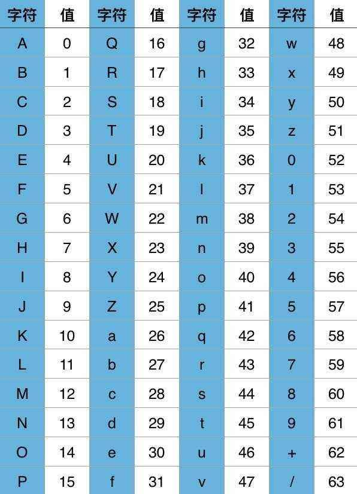

[!NOTE]
CSS选择器的优先级：!important > 行内样式 > ID选择器 > 类选择器 > 标签选择器 > 其他
<style>
a{color: yellow;} /*权值：0,0,0,1*/
div a{color: green;} /*权值：0,0,0,2*/
.demo a{color: black;} /*权值：0,0,1,1*/
.demo input[type="text"]{color: blue;} /*权值：0,0,2,1*/
.demo *[type="text"]{color: grey;} /*权值：0,0,2,0*/
#demo a{color: orange;} /*权值：0,1,0,1*/
div#demo a{color: red;} /*权值：0,1,0,2*/
</style>
<body>
<a href="">第一条应该是黄色</a> <!-适用第1行规则->
<div class="demo">
<input type="text" value="第二条应该是蓝色" /><!-适用第4、5行规则，第4行优先级高->
<a href="">第三条应该是黑色</a><!-适用第2、3行规则，第3行优先级高->
</div>
<div id="demo">
<a href="">第四条应该是红色</a><!-适用第5、6行规则，第6行优先级高->
</div>
</body>[!NOTE]
减少HTTP的请求次数，提高加载的性能
在一些情况下可以减少图片的大小
关键在于对background-position概念的理解和使用
<!DOCTYPE html>
<html lang="en">
<head>
<meta charset="UTF-8">
<title>购物车特效</title>
<style type="text/css">
*{
margin: 0;
padding: 0;
}
.select{
margin: 0 auto;
display: block;
width: 1000px;
height: 35px;
background-color:#F5FFFA;
}
div{
width: 42px;
height: 34px;
background-image: url(amazon-sprite_.png);
background-repeat: no-repeat;
background-position: -8px -335px;
}
div:hover{
background-image: url(amazon-sprite_.png);
background-repeat: no-repeat;
background-position: -55px -335px;
}
</style>
</head>
<body>
<a href="https://www.baidu.com" target='_blank' class="select">
<div></div>
</a>
</body>
</html>[!NOTE]
宣传/品牌/banner等固定文案
字体图标中使用
<style>
@font-face{
font-family: '字体名称随便起';
src: url('../font/字体名称.eot');
src:url('../font/字体名称.woff') format('woff'),
url('../font/字体名称.ttf') format('truetype'),
url('../font/字体名称.svg') format('svg');
}
/* 使用方法：html中的代码中加一个h1或者其他的，里面写你自己想要的特殊文字 */
h1{
font-size:36px;
color:#ccc;
font-family: "字体名称随便起";
}
</style>Base64就是一种基于64个可见字符(26个大写字母，26个小写字母，10个数字，1个+，一个 / 刚好64个字符)来表示二进制数据的表示方法。

[!NOTE]
扩展：不可见字符其实并不是不显示，只是这些字符在屏幕上显示不出来，比如：换行符、回车、退格......字符。
Base64字符表中的字符原本用6个bit就可以表示，现在前面添加2个0，变为8个bit，会造成一定的浪费。因此，Base64编码之后的文本，要比原文大约三分之一
[!NOTE]
两个字节：两个字节共16个二进制位，依旧按照规则进行分组。此时总共16个二进制位，每6个一组，则第三组缺少2位，用0补齐，得到三个Base64编码，第四组完全没有数据则用“=”补上。因此，上图中“BC”转换之后为“QKM=”；
一个字节：一个字节共8个二进制位，依旧按照规则进行分组。此时共8个二进制位，每6个一组，则第二组缺少4位，用0补齐，得到两个Base64编码，而后面两组没有对应数据，都用“=”补上。因此，上图中“A”转换之后为“QQ==”；
<style>
li:first-child {
height: 20px;
width: 100px;
background-color: #139aff;
}
li:last-child {
height: 60px;
width: 100px;
background-color: #89ff56;
line-height: 60px;
}
p:first-of-type {
background-color: red;
}
p:last-of-type {
background-color:deeppink;
}
/*每个p标签之前新增一个Hello文本*/
.container p::before {
content: 'Hello';
}
.container p::after {
content: 'Thanks';
}
.container p::first-letter {
font-size: 32px;
}
.container p::first-line {
background-color: #f1ffad;
}
/*所有选中的元素会变色*/
.container p::selection {
background-color: #1025ff;
color: red;
}
</style>
<body>
<ul>
<li>111</li>
<li>222</li>
<li>333</li>
<li>444</li>
<li>555</li>
</ul>
<div>
<h1>h1文本</h1>
<p>p文本1</p>
<p>p文本2</p>
<p>p文本3</p>
<p>p文本4</p>
</div>
<div class="container">
<p> css1 </p>
<p> css2 </p>
<p> css3 </p>
<p>我在学伪元素,我在学伪元素,我在学伪元素,我在学伪元素,我在学伪元素,我在学伪元素,我在学伪元素,我在学伪元素,我在学伪元素,我在学伪元素,我在学伪元素</p>
</div>
</body>
</html>[!NOTE]
- label[for]和id
- 隐藏原生的input
- :checked + label 选择器
<style>
#value1{
display: none;
}
#value1:checked+label{
color:blue;
background: #4cda60;
}
#value1:checked+label:before{
left:31px;
}
#value1+label{
cursor: pointer;
color:red;
display: block;
width:60px;
height: 30px;
background: #fafbfa;
border-radius: 15px;
position: relative;
box-shadow:inset 0 0 0 0 #eee,0 0 1px rgba(0,0,0,0.4);
transition: background 0.1s;
-webkit-transition: background 0.1s;
-moz-transition: background 0.1s;
-o-transition: background 0.1s;
}
#value1+label:before{
content:'';
position: absolute;
background: #fff;
top:1px;
left:1px;
width: 28px;
height: 28px;
border-radius: 50%;
box-shadow:0 3px 1px rgba(0,0,0,0.05), 0 0 1px rgba(0,0,0,0.3);
transition: left 0.1s;
-webkit-transition: left 0.1s;
-moz-transition: left 0.1s;
-o-transition: left 0.1s;
}
</style>
<body>
<input type="checkbox" name="timeType" value="1" id="value1" checked="checked"/>
<label for="value1"></label>
</body>